Odysseus is a fast file manager for GNOME. It looks and behaves like GNOME Files, and comes with twenty extensions built in: dual panel, Miller columns, an archive browser, content search & replace, PDF tools and more. Every one of them can be switched off in a click.
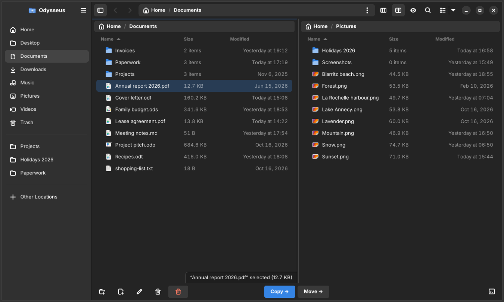
Real screenshot · dual panel (F3) · Adwaita dark
Compact Nautilus-style list rows, a thumbnail grid for your photos, and Finder-style Miller columns to dive deep into a tree without losing your way.
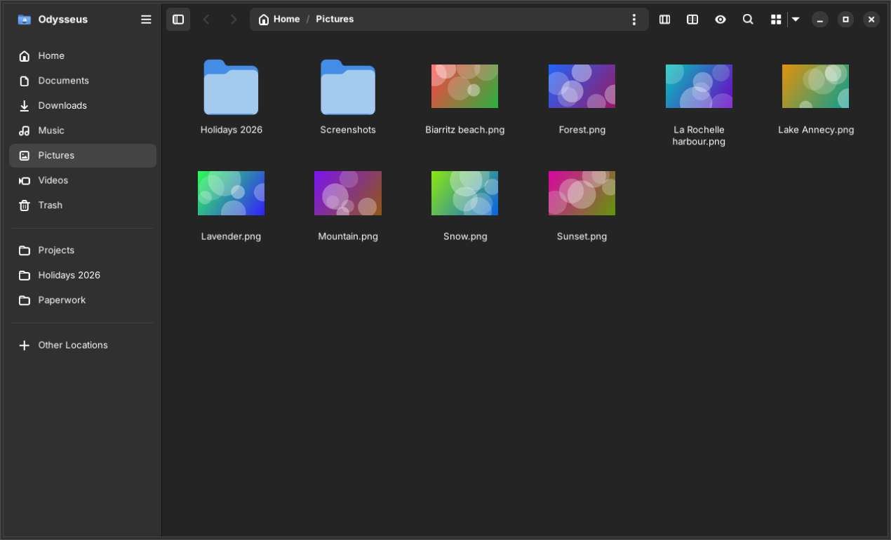
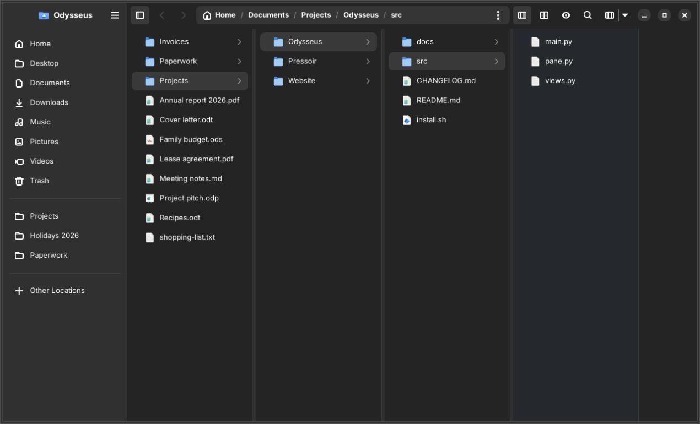
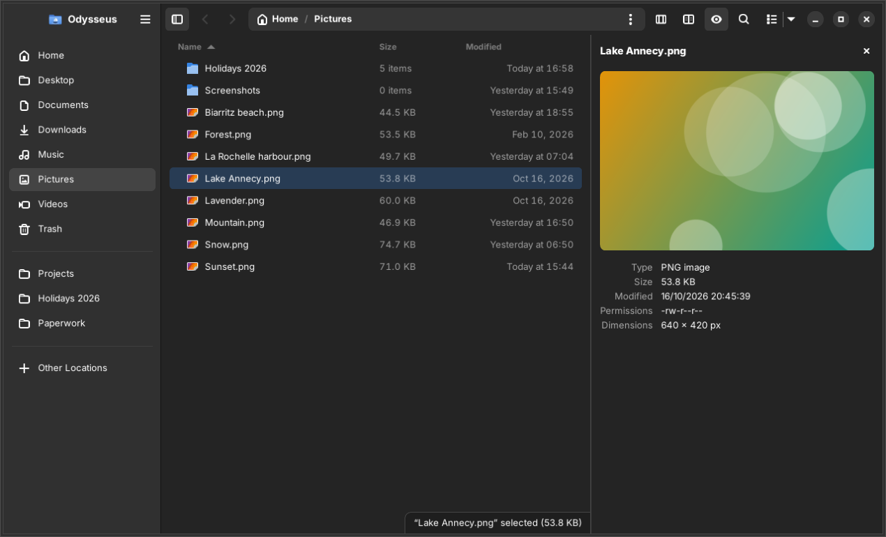
Move files between two places without juggling windows. Each pane keeps its own view, history and selection, and the operations bar is always one click away.
Search inside file contents with ripgrep (or grep), then preview every change line by line before a single byte is written.
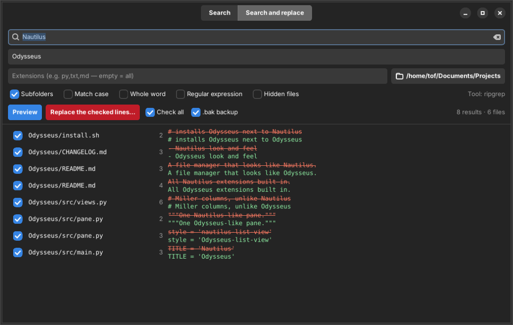
Browse more than fifty formats without extracting first, drag files out, add or rename entries. The engine comes from Pressoir and is powered by 7-Zip.
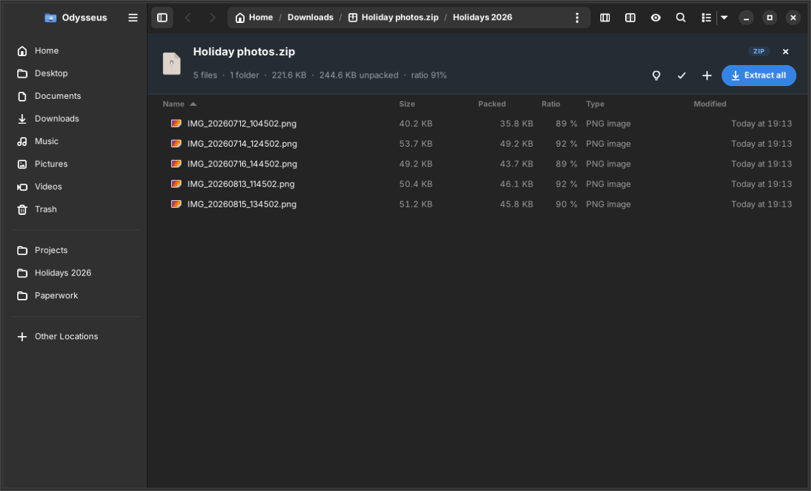
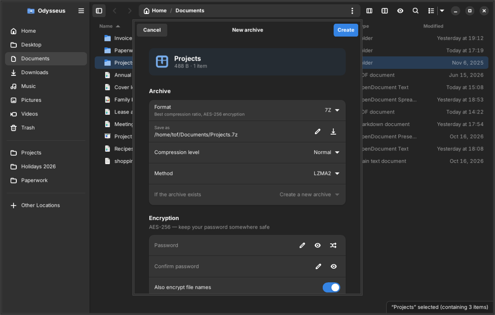
The four PDF extensions, rewritten and improved. Every tool shows what it will do before it does it, and never writes over an existing file.
1-3,7,10-).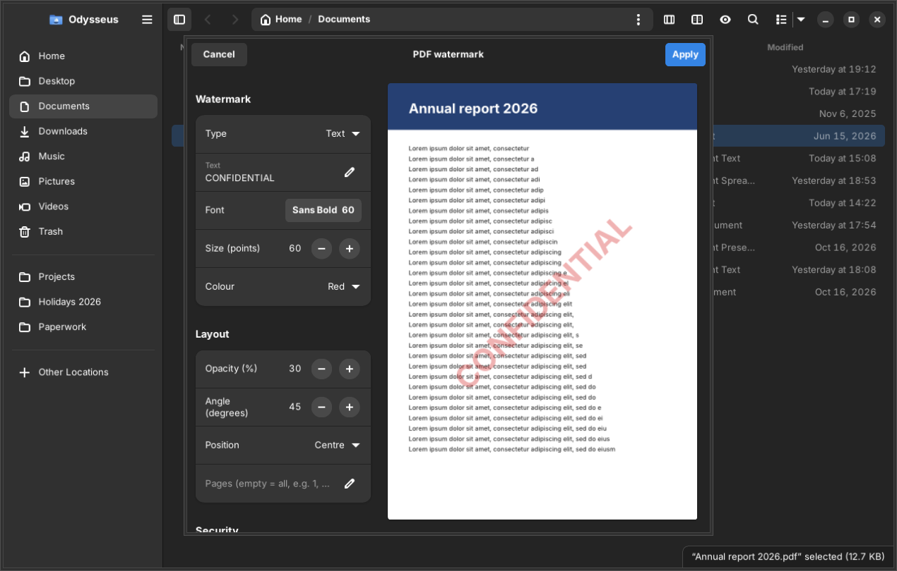
Odysseus has no colours of its own: it follows your GTK4 theme, light or dark, with your accent colour — Adwaita or a theme installed in ~/.config/gtk-4.0. Dialogs are real windows, so transparency and borders apply too.
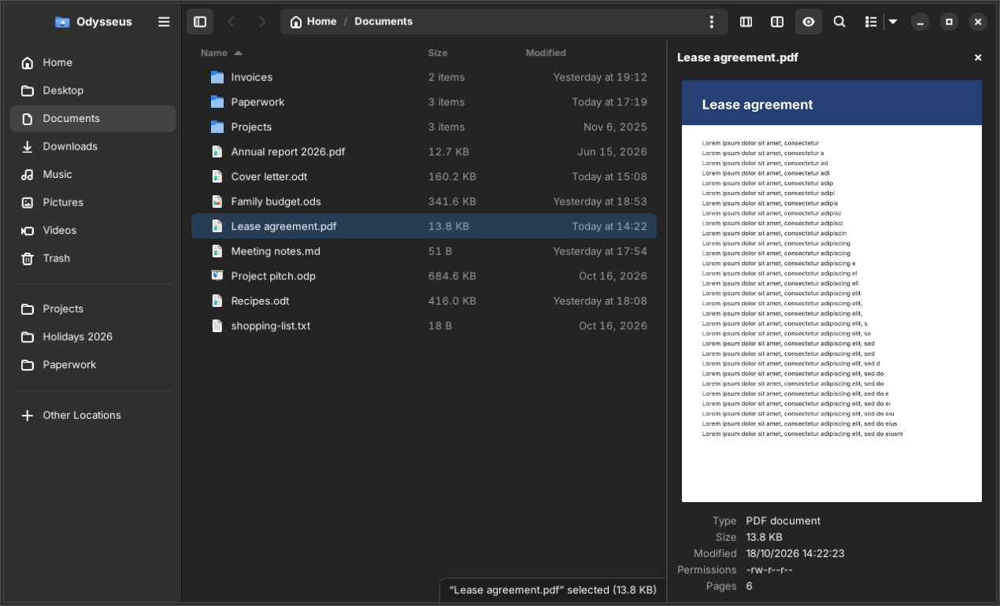
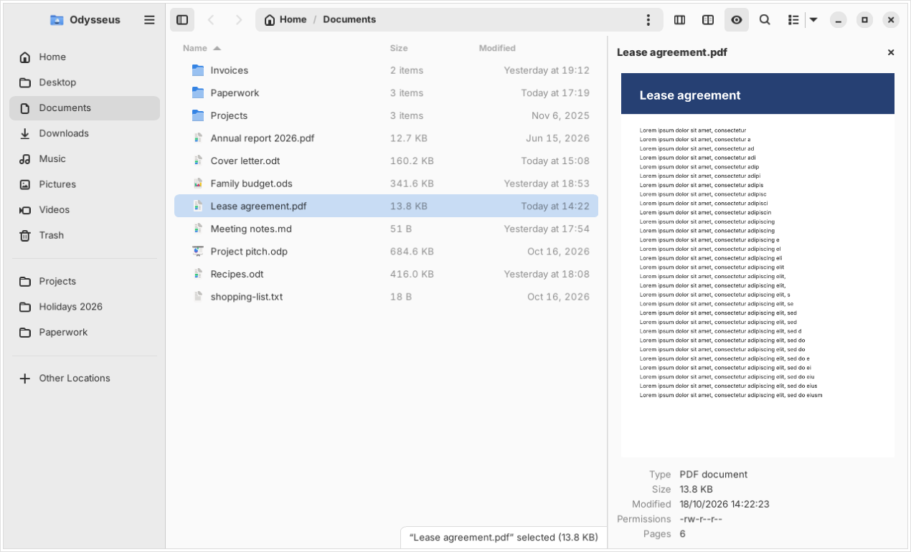
Drag the handle
Each extension is a switch. Turn off what you don't use and it disappears from menus, toolbars and shortcuts — instantly, no restart.
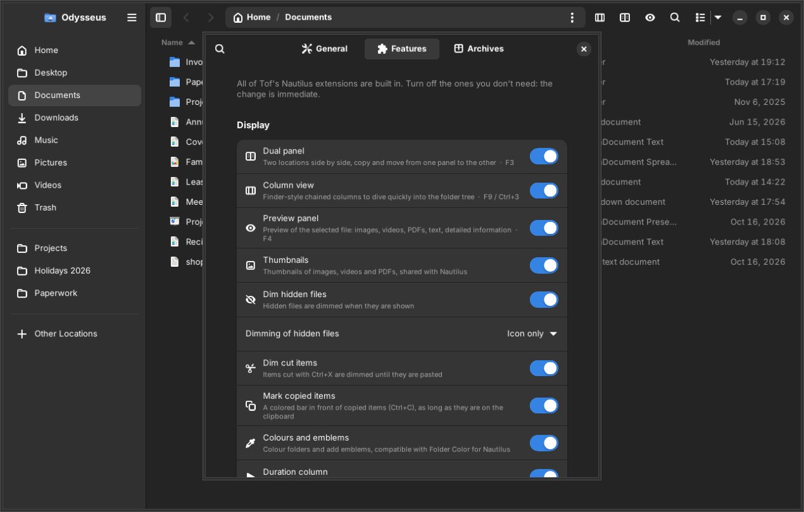
An optional This PC page gathers your folders and every drive, with a usage bar and the free space of each. And Odysseus plugs into GNOME the way Nautilus does.
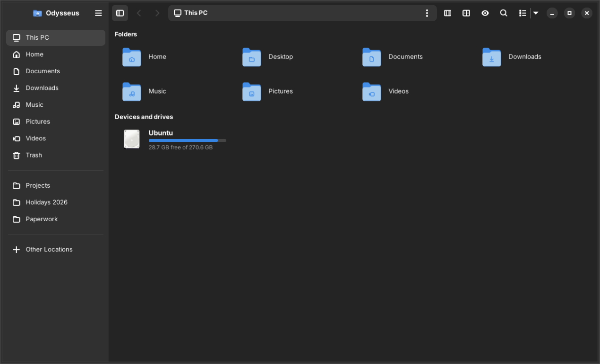
Measured on a folder of 100,500 files. Your photo folder opens before you notice it was loading.
The folder is read in the background; names appear at once, sizes and dates follow.
Only the rows on screen exist. A 100,000-file folder costs what a screenful costs.
Thumbnails and folder sizes are computed for what you are looking at before anything else.
Every destructive operation is tested on throwaway trees, next to a “precious” folder that must never change — including real FAT USB keys and booby-trapped archives.
The new copy is written under a temporary name, synced to disk, then swapped in. If anything fails, the old file is still there.
Skipped, failed or cancelled items stay at the source, between disks too.
FAT, exFAT, NTFS: forbidden characters cleaned, case clashes renamed, files over 4 GB refused before writing.
Archives, PDF outputs, backups: an existing file is never replaced without asking — you get “name (2)”.
../ paths, absolute paths, links pointing outside: nothing escapes the destination folder.
Undo and redo never overwrite a file created in the meantime.
Everything from the Nautilus Extensions collection, merged into Odysseus — and each one can be switched off.
Two locations side by side, copy and move between them, drag & drop.
F3Finder-style Miller columns to dive quickly into the folder tree.
Ctrl+3Images, videos, PDF pages, text and detailed information.
F4Content search with ripgrep, previewed replacement with backups.
F8Browse, extract, compress and edit archives in 50+ formats.
F7One-click smart extraction, multi-volume and passwords included.
Ctrl+Shift+EGhostscript presets, real progress, before / after sizes.
PDFAny order, page ranges per file.
PDFText or image, nine positions or tiled, live preview, flattening.
PDFExtract, delete, rotate or split pages, with thumbnails.
PDFMP3, M4A, OGG, OPUS, FLAC, WAV — batch, with progress.
ffmpegArrows, frames, text, highlighter and freehand on any picture.
ImagePackage preview, dependency check and live log.
.debA sortable length column for audio and video files.
ffprobeCut files stay dimmed until pasted; copied ones get a colored bar.
Ctrl+XHidden files dimmed — icon only, or icon and name.
Ctrl+HColour folders and add emblems, compatible with Folder Color.
FoldersOpen in your text editor, open a terminal right here.
Ctrl+Alt+TLong copies and moves, with speed, remaining time and cancel.
Built inEvery extension switched on or off live, from the preferences.
PreferencesOther apps open Odysseus on a file through the standard D-Bus service, even when it is closed.
FileManager1Folders and drives on one page, with usage bars and free space. Optional.
SidebarSend files to your phone with GSConnect, or by email with your mail client.
GSConnectExecutable scripts run in a terminal that stays open, like Nautilus.
ScriptsOdysseus is in daily use and final testing. Packages for Ubuntu 24.04 “Noble” and its derivatives — Zorin OS 18, Linux Mint 22 — are on their way.
Requirements: Python 3.10+, PyGObject, GTK ≥ 4.14, libadwaita ≥ 1.5. Everything else — 7zip, ghostscript, ffmpeg, ripgrep… — is optional: a feature whose tool is missing tells you what to install.